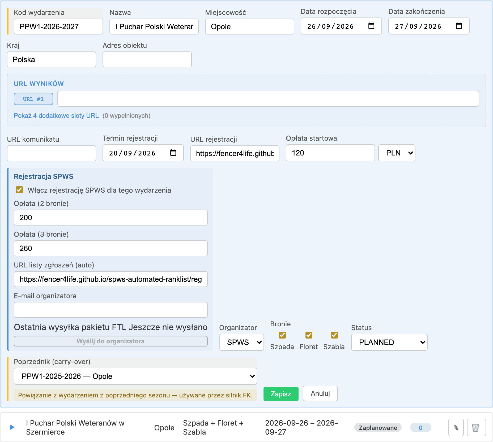
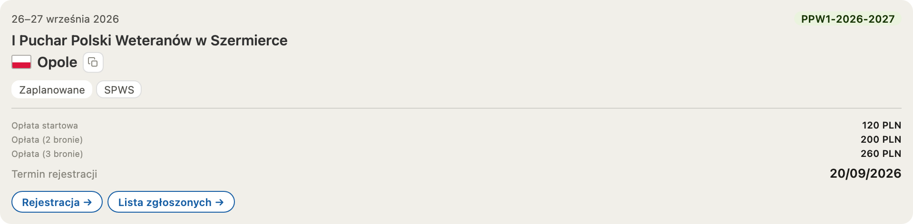
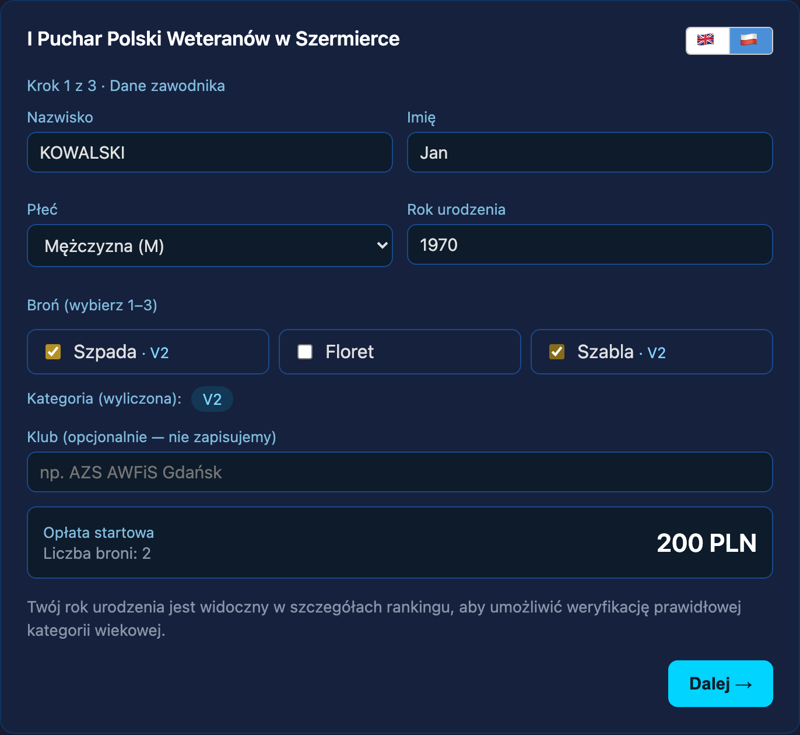
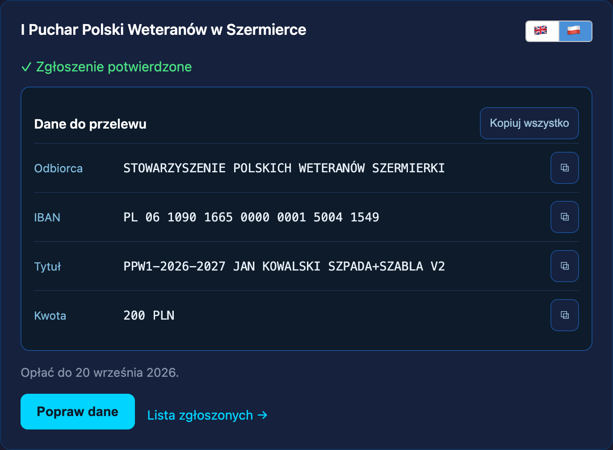
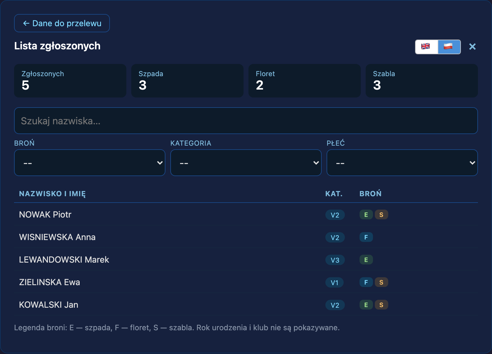

Why this page exists
Purpose
The registration subsystem spans an admin form, a public page served from a different origin, two custom elements, three database functions, two dedupe arbiters, a seed exporter and the ingestion pipeline. Each part is documented where it lives. Nothing followed a single registration across all of them, and three defects reached production in August 2026 because the code did something no page described.
This page owns the sequence. Events and registration remains the owner of the subsystem's invariants and implementation map; where the two disagree, that page wins on facts and this one is stale.
Screenshots are captured from a local environment by script, never mocked, so a control shown here is a control that exists.
Stage 1 · Administrator
Enabling registration on an event
Registration is per-event and off by default. An administrator opens the event in Wydarzenia and ticks Włącz rejestrację SPWS dla tego wydarzenia, which sets bool_use_spws_registration. That one flag decides whether the association collects entries for this competition or merely links to someone else's form.

bool_use_spws_registration; the two fee fields drive the tiers the fencer is quoted; URL listy zgłoszeń is generated rather than typed; E-mail organizatora is where the seed bundle is sent.Three separate fields gate what a visitor sees, and they are easy to confuse. bool_use_spws_registration decides whether we run the registration at all. url_registration decides whether a registration link appears on the calendar card. url_entry_list decides whether an entry-list link appears beside it. An event can have the flag on and no links, or links and the flag off — and the second combination sends visitors to the deployed public page instead of the in-app dialog.
Fees are quoted by weapon count: the base fee, then a two-weapon and a three-weapon tier. The fencer is never asked to compute anything — selecting weapons picks the tier. Each event also carries the currency the fee is stated in, chosen in the editor beside the amount; an event that states none is read as the association's home currency, PLN. Most events are priced in złoty, but not all — the currency is the event's, never the page's.
Registration cannot be switched on without an account to pay into. The panel also carries the payee and IBAN, which are optional: left empty the event inherits its organizer's default account, and the editor states which of the two is in force rather than leaving the administrator to infer it from an empty field. Where neither level supplies one the toggle is refused — by the database, not merely by the form — because registration exists to support collecting a fee and enabling it with nowhere to pay is a configuration mistake that surfaces later, for the fencer.
The IBAN is checked against ISO 13616 before it is stored, so a mistyped account is caught at the field. The check is deliberately not Poland-specific: an organizer abroad is plausible.
Stage 2 · Arriving
How a fencer reaches the form
There are two doors. The calendar card carries both when the event is configured for them.

href to the deployed page — but when bool_use_spws_registration is true their click handler cancels the navigation and opens the in-app dialog instead. With the flag off, the same link navigates away to production.The second door is the shared link, register.html?event=<code>, which the association distributes directly. Appending &view=list serves the public roster instead of the form; the page mounts a different custom element per view, so moving between them is a real navigation rather than a step change.
The registration link is not shown once the cutoff has passed, and the entry-list link is not shown once the event has started or been cancelled. These are independent: after the deadline the roster stays reachable while the form does not, which is deliberate — people still need to see who is entered.
Stage 3 · Declaring
Identity, and what is not checked
The first step collects surname, given name, gender, birth year and one to three weapons. The surname is uppercased as it is typed; the age category and the fee are computed live and shown back.

The birth year is not validated. Continuing requires only that a number is present — there is no lower or upper bound, and the computed category is display-only, so a year that resolves to no veteran category at all still passes. Since the birth year is part of the dedupe key for an unlinked entrant, a mistyped year does not correct an earlier entry, it creates a second one. This is a known gap, not intended behaviour.
On continuing, the declared triple is looked up against the fencer master list. The match is exact — no fuzzy matching happens in the browser, by decision. A hit links the registration to that fencer and the entrant continues straight to consent, seeing nothing further; this is the path most entries take.
A miss is not a dead end, and since September 2026 it is no longer silent either. Only after the exact lookup misses is a second, name-based lookup consulted, which classifies every fencer sharing that name as an exact match, a pair of exchanged name fields, a fencer held with no birth year, or a fencer held with a different one. The form then resolves a fixed order:
- The two name fields were exchanged — the entrant is shown the fencer already on the list and asked which way round it goes. Accepting rewrites the two fields locally, after which the ordinary exact match finds them; nothing is written to the master list.
- We hold them with no birth year at all — the declared year is filled in silently and marked confirmed. Nothing contradicts it, so there is nothing to ask.
- We hold a different birth year — the entrant is asked, and every candidate is listed. Where two people share a name this is the only safe resolution: the person reading the screen is the one who knows which of them they are. They may adopt their declared year, accept the stored one, or say it is someone else.
- Nobody matches at all — the name is echoed back in the form it will take on the entry list, with a swap button, before a new identity is created. This is the only step that can catch a first-time international entrant who writes their name in a different order, because the exchanged-fields check needs a fencer already on the list.
An entrant who matches cleanly sees none of this.
A failed lookup is deliberately treated as "no match" rather than as an error, so a network problem never blocks an entry. The cost is that a fencer who is on the master list can be recorded as unlinked when the lookup times out. Stage 5 absorbs that case rather than leaving two rows.
The same posture covers the name-based lookup: if it fails, the entrant is treated as a newcomer rather than shown an error. A correction to the master list is an improvement on top of a stored declaration, never a precondition for one.
Stage 4 · Consent
The privacy notice and what it commits us to
Two commitments in this notice constrain the system rather than merely describing it. The e-mail address is a one-time check and is not retained. The club is used only for start files and is not stored. Carrying the club through to the seed file would therefore contradict the text a fencer has already accepted, which makes it a consent-version change rather than a code change — the reason it remains open.
Stage 5 · The write
How the entry list is built, and how entries are overwritten
There is exactly one public way to create a registration. Anonymous visitors hold no insert privilege on the table; the write happens inside a function that runs with its owner's rights, which is what lets the table stay closed while the page stays open.
Before anything is written the registration window is re-checked on the server, against the registration deadline or, where none is set, the event start date. The form performs the same check, but the client check is a courtesy — a stale link cannot write past the cutoff because the database refuses it.
Two dedupe keys, not one
"The same person" means different things depending on whether we recognised them, so the write takes one of two paths:
- Linked to a fencer — the key is the pair (event, fencer). Submitting again updates that row.
- Not linked — the key is the declared identity: event, surname, given name and birth year, compared case-insensitively and ignoring surrounding spaces. Submitting again updates that row.
A single insert cannot carry two conflict targets, which is why the function branches rather than being written once. The consequence is the part worth remembering: the declared name and birth year are the identity of an unlinked entry. Changing either does not edit the entry, it describes a different person — so the create path inserts a second row and leaves the first standing.
Because the two keys cannot see each other, one person could once hold a linked and an unlinked row for the same event, both reaching the public roster and the organizer's file. Each path now absorbs the other's twin before inserting. Where the unlinked row exists first it is promoted — given the fencer link in place — rather than deleted and recreated, so the original creation time and consent evidence survive. A later submission never resurrects a name the fencer has corrected away.
What a repeat submission changes
Re-submitting the same identity updates the weapons, gender and the edit handle, and refreshes nothing else. Consent is not restamped, since consent was given at the first submission. For an unlinked entry the birth year is deliberately not updated: it is part of that entry's identity, so a different year is a different entrant rather than an edit.
Names are normalised at the boundary
Declared names are stripped of surrounding whitespace by the database on every write, whichever caller performs it — the public function, an administrator, or anything added later. The form also trims before submitting. The duplication is intentional: the form protects the common path, and the trigger covers callers that never pass through a form.
Stage 6 · Payment
What the fencer is left holding

The account shown is resolved when the event is read: the event's own override where it has one, otherwise its organizer's default. It used to be a single number compiled into the frontend bundle, identical for every event — which is why an organizer other than the association could not run registration at all.
The amount is quoted in the event's own currency, and the copy buttons hand over exactly what is on screen. That agreement matters more here than anywhere else on the page: a fencer pastes what the button gave them rather than what they read, so a panel and a clipboard that disagree put the wrong figure into a real transfer. Until 2026-09-02 the registration page quoted a fixed PLN in all four places — the fee on step one, the amount row, its copy button and copy everything — although the column had existed since March and every writer honoured it. The calendar card had always read the event's value; only this page had not been wired to it.
The system displays transfer instructions and does not track whether the transfer arrives. There is no paid flag, and neither the roster nor the organizer's file is gated on payment; the organizer verifies it in person at check-in. A declared registration, not a payment, is what "entered" means here.
Stage 7 · Correcting
Fixing a declaration that is already submitted
Because the declared name and birth year are the identity of an unlinked entry, the create path cannot repair a typo in either. Correcting them needs a write that addresses the row directly, by its identifier, consulting no key at all. That is a separate function, and it needs authorising.
The row identifier cannot authorise it: the public roster publishes that identifier. Authorisation is a random handle, generated by the browser, stored on the row and returned by no public projection.
The handle is short-lived by design. It lives in the page and is gone when the form closes. A fencer returning later re-enters the identity they declared, which lands on their existing row and issues a fresh handle — so re-submission rotates it, and that is the mechanism rather than a side effect. Persisting the handle in the browser was built and then removed: it tied the ability to correct to one browser on one device, which failed the ordinary case of registering on a phone and correcting on a laptop.
The edit honours the same registration window, never changes the fencer link, never restamps consent, and refuses rather than merges when the corrected identity collides with another entry at the same event.
Stage 8 · Published
What the public roster shows

The roster is a deliberately narrow projection: surname, given name, gender, weapons and the age category. Birth year and club are excluded, which is why the page says so in plain language at the bottom. Every declared registration appears; there is no payment gate.
Rows are displayed surname A–Z, given name breaking a shared surname. The ordering is applied in the browser under Polish collation, fixed regardless of the interface language, because a code-unit comparison sorts Ć, Ę, Ł and Ż after Z and the surnames are Polish whatever the labels say. The projection itself is unordered; the query's registration order survives only as the final tie-break between two people sharing both names.
The projection publishes the row identifier and the age category. The category is a ten-year band, so it narrows the birth year considerably — and the match lookup answers per birth year before anything is written, which makes an exact year recoverable by an anonymous caller. Any reasoning that treats the birth year as private is therefore unsound. This is the single largest open gap.
Stage 9 · Handover
What the organizer receives
The organizer runs the competition on their own timing software, so the association sends a seed file rather than access. It is generated on demand from every declared registration at the moment of sending, never from a stored snapshot, so it cannot drift from the roster.
Names are canonicalised on export — surname uppercased, given name in title case, both stripped — which is why padding in stored names never reached the file even before the database normalised it. Each entrant carries an age-category marker on the surname, because the organizer’s software renders surname then given name and that is the order our own result reader expects; an entry read back the other way round carries no recoverable category. The seeding order interleaves the sub-rankings so that a single pool sheet is balanced across categories, and the order itself comes from the ranking the fencers see — which, at the first event of a season, means the carry-over ranking, since the season holds no results of its own yet. The club field is emitted empty, per the consent text. A successful send is stamped on the event so it is visible that the organizer has been given the file.
A set is one mixed-pool competition per weapon plus one direct-elimination table per gender and age category present. That split is deliberately the finest one possible: the organizer is told to combine tables freely in their own software, because the results are re-split by birth year when they come back, and predicting which tables they would combine produced files whose names claimed categories they did not contain. Every file name states the event, weapon, phase, gender and category range in ASCII; the Polish title inside the file is what their software displays.
The organizer no longer has to wait to be sent the files. One page, reached by a link that carries its own key, lists every event that has entries and has not yet happened; choosing one shows that event’s files with each file’s name, the title their software will display, how many fencers it holds and what to do with it, grouped by weapon so the set reads as three lines rather than thirty. One control bundles everything, because a single event can produce dozens of files.
The files are built at the moment of download, not when the page is opened: the entry list is re-read first, so an organizer who leaves the page open all morning still receives what is current, and the page states which moment the list it holds was taken. Alongside the files the archive carries the same instructions in both languages, because the page is read at a desk days beforehand while the archive is opened at the venue, often with no usable connection.
That page is served the entry list through a projection carrying no birth year and no database identity: the names, genders, weapons and age categories already published on the public entry list, plus each entrant’s position within their own sub-ranking. Its key is checked in the database rather than in the page, and a key that is absent, unknown or withdrawn yields an empty page rather than an error. It is the one public surface with a language of its own, because organizers of European-circuit events may not read Polish. The on-demand send remains, and is unchanged.
Stage 10 · After the competition
Resolution, and the end of the row
A registration creates no fencer, and touches no result and no ranking score. It records what somebody declared. An unlinked entrant first becomes a fencer record at results ingestion, which is also where most links are made.
There is one exception, and it is deliberate: a registration may correct a birth year on the master list. A fencer stating their own birth year is first-hand evidence, and it outranks a value derived by scraping. The write happens only when the entrant answers the question above, only for the fencer they picked from a candidate set the server recomputes from their own declared name, and only for somebody holding the edit handle for the registration they just made. Nothing else about a fencer can be written this way.
A birth year we never held, or held only as an estimate, is corrected without comment. A birth year somebody had already confirmed is different: changing it moves that fencer between age categories and re-scores every event they have played, so the entrant's answer is recorded as a proposal and nothing is changed. An operator is alerted within fifteen minutes and decides. The declaration is never lost; it simply does not take effect until somebody looks.
That split exists because the form's question is not a control the server can rely on. The action a fencer chooses arrives as an ordinary value in the request, so anyone able to make a request can send it — which means a prompt can protect a person from a mistake, but never a record from a stranger. Filling a blank or correcting a guess is worth allowing on those terms; overwriting something already checked is not.
The ranking repairs itself afterwards without anyone acting: changing a birth year queues a recompute of every event that fencer played, and the queue drains on a schedule.
- Where the stored birth year was an estimate, the declaration wins and the stored value is corrected. Collecting exactly this is one reason unlinked registration is accepted at all.
- Where the stored birth year is known and the declaration disagrees, ingestion still holds the conflict for review rather than applying it. A namesake and a bad edit look identical here, because nobody is present to ask. That is precisely why the question is now put at registration instead, where the one person who can answer it is looking at the screen.
Once results are ingested and reconciled, the registration has done its work and the row is purged. The ranking record is durable; the registration is not. That is the end of the lifecycle, and it is the reason nothing downstream may treat a registration as a lasting identity.
When it does not go to plan
Failure boundaries
| Situation | What happens |
|---|---|
| Link opened after the cutoff | The form is replaced by a closed notice; the roster stays reachable. The server refuses the write independently, so a stale page cannot get past it. |
| Link opened after the event ended | The whole page reports the event as finished; neither form nor roster is offered. |
| Registration not enabled for the event | Only the organizer's external link is offered, so a shared link is always safe to send. |
| Birth year mistyped | Accepted. It creates a second entry rather than editing the first, and the create path cannot merge them. Correcting it requires the edit path, or an administrator. |
| Same entry submitted twice | Updated in place, latest submission wins. A soft warning is shown beforehand when a matching name is already on the roster. |
| Identity lookup fails mid-flow | Treated as "no match" so the entry is never blocked; if the fencer already holds a linked row for the event, the write absorbs it rather than adding a twin. |
| Correction collides with another entry | Refused with an error. Merging would destroy one of two real declarations. |
| Fencer returns on another device | No handle, so no direct edit. Re-entering the declared identity lands on the existing row and issues a new handle. |
| Registration switched on with no account | Refused by the database, so the state cannot be created by any caller. The administrator is told at the toggle, and the editor names the account that would be used. |
| An IBAN is mistyped in the editor | Refused before saving, at the field. The database constraint refuses it too, so a client that skips the check cannot store it. |
| Somebody enters another person's name | Possible, and accepted as a bounded risk: nothing here proves identity. A fake entry has no effect on the ranking, which is results-based, and the organizer checks people in at the venue. |
Known gaps
What this page is not claiming
These are open, recorded against the decision that owns them, and named here so the walkthrough cannot be read as describing a more complete system than exists.
- No rate limiting anywhere. The identity lookup answers per birth year, unthrottled, before any write. Any control resting on the birth year being unknown is currently worth nothing.
- The declared birth year is never challenged, so a typo silently produces a second entry. The fix is to challenge only where the stored year is known rather than estimated — challenging an estimate would turn away exactly the people the system exists to learn from.
- Corrections leave no audit trail. Revoking a handle is already possible for an administrator, but the previous value of a changed name is not recorded anywhere.
- Only the association has a default account. An organizer's default payee and IBAN are stored and resolved, but nothing in the admin interface sets them — the association's were seeded by migration. An event run by any other organizer therefore cannot have registration enabled until an administrator gives that event its own account, because the database requires one to resolve. The write path is already validated; what is missing is the screen.
- The club is collected and discarded. Carrying it to the seed file inverts the accepted consent text, so it is a consent-version change.
- Entries after the deadline are refused in the database. Whether to accept late entries is a business decision, not a copy change.
Rationale
Related decisions
- ADR-079 — the identity model, the read-only invariant, impersonation posture, and the amendments covering unlinked registration, twin absorption and the edit path.
- ADR-078 — lawful bases, the data inventory, and the rights matrix including rectification.
- ADR-080 — the seed file format, category markers and seeding order.
- ADR-093 — why a declaration may correct a birth year, the six-rung order, the four guards on the write, and why overwriting a confirmed year is never silent.
- ADR-083 — why the public functions are the entire anonymous surface, and why that surface is an allowlist.
- Events and registration — the owning subsystem page. End-to-end flows places this journey among the others.